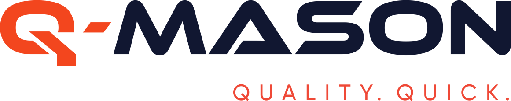
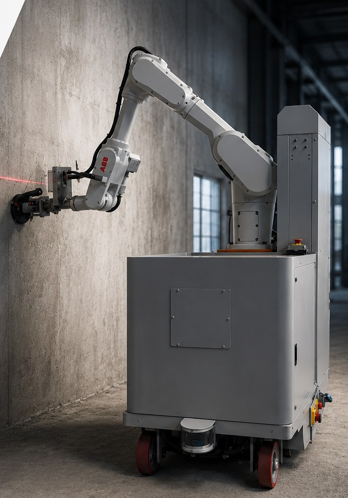

The construction finishing platform.

Q-Mason is built for predictable, repeatable, high-quality interior finishing — from bare concrete to painted wall, with interchangeable tool ends on a single platform.
Every capability is designed around one question: can this hold up on a live mass-housing site, at scale, every day.
Grinding, gypsum plastering, putty and painting — all automated in one machine, with interchangeable tool ends covering the full finishing sequence.
Every pass is measured and logged — finish held to under a millimeter, with a digital QA record captured automatically on every wall and ceiling.
Delivered as Robotics-as-a-Service with trained on-ground operators and full backend support, so sites scale adoption without building in-house robotics expertise.
Irrepress Labs was founded in 2024 in Bangalore, bringing together real estate development experience and deep automation engineering to build robotics for the construction industry.